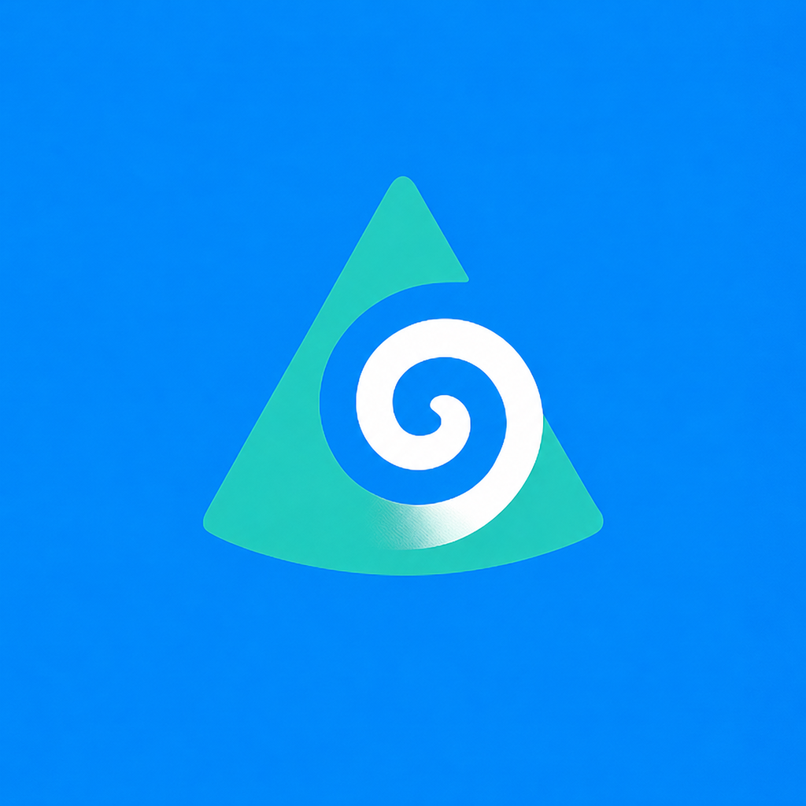

Figure out how to build one
This was the first pass at turning API docs into a working app. Read the docs, try it in SwiftUI, fix what broke, repeat.
OR Support · iPhone Apps · Document + AI Workflows
I work on-site at the VA in Palo Alto as Stryker's on-site specialist, supporting Stanford surgeons in the OR. Outside work, I build iPhone apps around documents, retrieval, and AI.

I work in the OR and build apps after work.
At Stryker I spend a lot of time around IFUs, manuals, compatibility questions, and equipment issues. That is a big part of why documents and workflows ended up mattering so much to me.
Before this, I was locating utilities in Illinois. I moved to California in 2021 after meeting my wife through WoW Classic, then started at Stryker in 2022.
When GPT-4 showed up, it changed how quickly I could get through dense docs. I used ChatGPT constantly, especially once the iPhone app added file upload.
Eventually I hit limits around file count, query size, and stability. That pushed me into the API docs, then Xcode, then the first app.
The first apps came out of copied docs, Playground threads, red Xcode errors, and a lot of rebuilds. That was the process.
OpenAssistant was the first version. I built it because I wanted a better way to work through documents on iPhone. The path in was the Assistants API, copied docs, Xcode errors, and a lot of iteration. It also got rejected around 30 times before it stayed on the App Store.
OpenCone was the next step once bigger document sets started stressing the earlier workflow. I wanted more retrieval control, found Pinecone, and built around indexes and namespaces. Getting it onto the App Store was mostly me wanting to see if I could do it again.
OpenResponses was the rebuild after OpenAI moved to Responses. I did not want the first app stuck on older endpoints, so I rebuilt the core flow and got it through review on the first submission.
OpenIntelligence came after WWDC25 exposed Foundation Models. I wanted to try the same kind of document workflow on Apple's local model path. The big constraint was the 4,096-token session budget, which pushed me into a multi-session reasoning loop.
Outside the App Store apps, I also have smaller side projects. MedMod is the more ambitious medical-software concept, and PlaudBlender is where I went deeper on Python, search, and graph tooling.
This was the first pass at turning API docs into a working app. Read the docs, try it in SwiftUI, fix what broke, repeat.
This was the point where embeddings, vector search, indexes, and namespaces stopped being abstract and became part of the product.
This one was mostly migration and cleanup work. Move the app to Responses, keep the behavior intact, and avoid another long review cycle.
This changed the constraints completely. The work shifted toward Apple's on-device model path, tighter token limits, and making the workflow useful without leaning on cloud models.
Most of this came from work, documentation, repetition, and building things until they held up. The hospital side made reliability matter. The app side gave me a place to keep testing ideas.
These are the main apps. Together they show how the work moved from document Q&A, to retrieval, to rebuilds, to Apple's local model path.
The progression is straightforward: better document workflow on iPhone, then bigger document sets, then a rebuild on newer endpoints, then a local Apple path.
The repos and App Store pages are public if you want the full trail.
First app. Better document workflow on iPhone.
Second app. Larger document sets and more retrieval control.
Third app. Rebuilt on Responses so the first app did not get left behind.
Fourth app. Built because I wanted an offline version of the same document workflow.


OpenResponses was the rebuild once it became obvious OpenAssistant was going to age out on older plumbing.


OpenIntelligence came from wanting an offline version of the same document workflow. Once WWDC25 made Apple's Foundation Models path real for developers, I wanted to see what that idea looked like on-device.



OpenCone came from pushing the same document problem further once larger queries and bigger document sets started making the earlier flow feel unstable.


OpenAssistant started as a personal hurdle. LLMs made dense docs way easier to work through, but I wanted more control over the workflow and how much material I could throw at it.


MedMod is a local-first medical software concept built around SwiftData, HealthKit/FHIR, Foundation Models, and RealityKit. It is probably the clearest example of me trying to rethink a healthcare workflow instead of just wrapping a model.


PlaudBlender is more of a Python systems project: pipeline stages, vector search in Qdrant, a Dash interface, and MCP tools on top of a searchable timeline and graph.
I build apps on my own time, usually because I want a better way to handle a document or workflow problem.
I provide intraoperative technical support to Stanford surgeons at the VA in Palo Alto as Stryker's on-site specialist. There is no local Stryker management on site, so a lot of the day-to-day responsibility sits with me.
Managed and validated patient-facing operational data in a clinical environment where accuracy, confidentiality, and process reliability mattered.
Field operations role built around precision, safety, route planning, and independent execution in a high-accountability environment.
Supported patient care workflows while handling scheduling, insurance administration, and front-line clinic operations.
Early leadership role managing distributed operations, staffing coverage, and on-call execution across multiple sites.
Bachelor's Degree in Kinesiology and Exercise Science.
I am always open to talking with people working on healthcare software, document workflows, AI tools, or other messy real-world systems. If any of that overlaps with what you do, feel free to reach out.